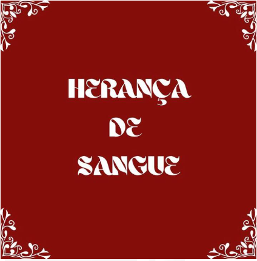

Este curta metragem foi feito por alunos do Primeiro Semestre de Cinema e Audiovisual da ESPM.
Se trata de uma família com 4 irmãos, um adotado, um bastardo e gêmeos, o pai (Senhor Mansur)
acaba de ter uma morte súbita e isso faz com que os irmãos que não são muito próximos se reúnem
para esperar o que o atestado de óbito do advogado ira trazer. Após vários conflitos familiares
o advogado chega para trazer o veredito final e trazer a paz ou mais caos a essa família.